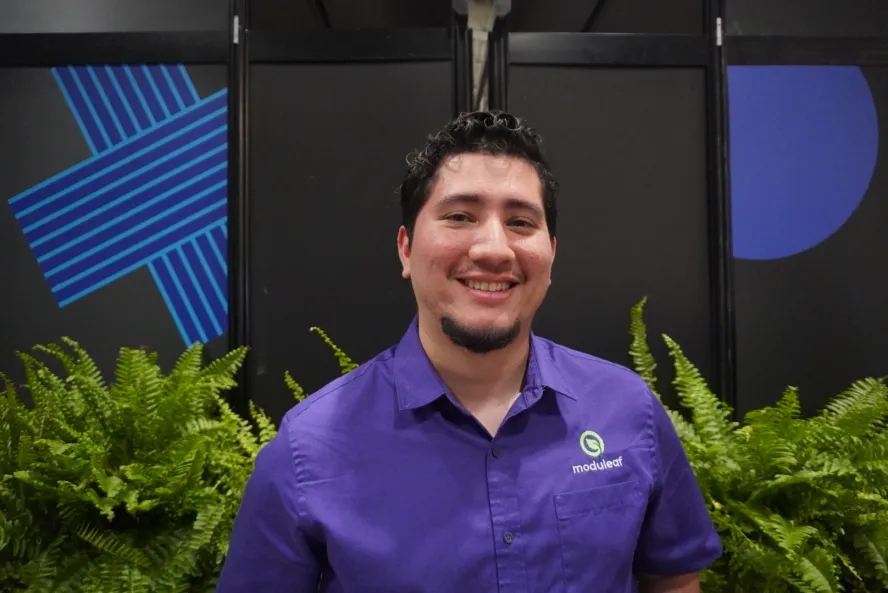
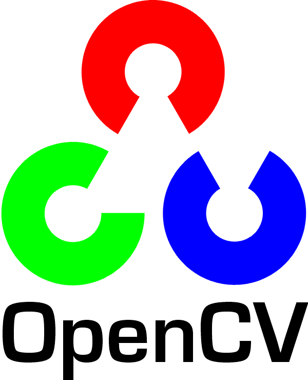
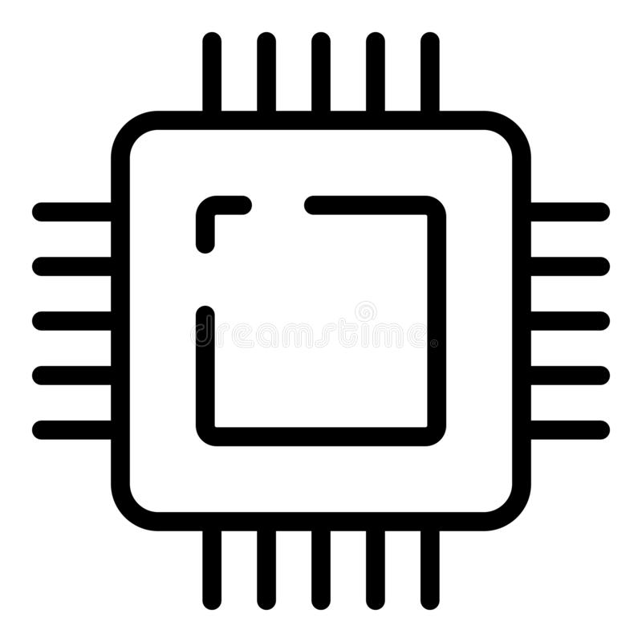

About Me
I'm a final-year Mechatronics Engineering student at Ontario Tech University with a deep passion for robotics, AI/ML, and automation. I thrive on bridging mechanical design, electrical systems, and software to build intelligent systems that solve real-world problems.
From developing autonomous robots at Moduleaf, an agricultural robotics company, to designing humanoid arms at GRASP Lab, I'm driven by hands-on exploration and a dedication to continuous learning. My goal is to build a successful career in robotics, especially in the exciting field of humanoid robots.
Technical Arsenal
 ROS2
ROS2
 C++
C++

OpenCV
EmbeddedProfessional Experience
My journey in robotics and engineering.
Robotics Instructor
Explorer Robotics | Oshawa, ON
- Mentor 20 students weekly through PyBricks workshops (Scratch and Python), adapting teaching methods across elementary, junior, and senior levels for World Robot Olympiad preparation.
- Facilitate autonomous robot programming challenges, coaching students to develop problem-solving and debugging skills independently.
ROS2 Development Consultant
ScalpelSpace | Remote
- Lead integration of proprietary robotics hardware with ROS2 using ros2_control, streamlining motor control and sensor data acquisition for enhanced system reliability.
Engineering Intern
Moduleaf Technologies Inc. | Oshawa, ON
- Engineered a 6-DOF robotic arm harvesting system using ROS2 and MoveIt, successfully transitioning the project from concept to a functional MVP.
- Evaluated 7 kinematics planners to identify the optimal solution for predictable motion, reducing harvest cycle time by providing data-driven recommendations to the engineering team.
- Implemented a YOLO segmentation model combined with algorithmic distance estimation to achieve autonomous berry localization and precision MoveIt path planning.
Lab Technician
GRASP Lab, Ontario Tech University | Oshawa, ON
- Designed robotic arm system to validate human-like motion and test control system controllers for humanoid research.
- Proactively maintained 4 3D printers operational, ensuring continuous support for laboratory projects and graduate student research.
Electrical Technician Intern
The Panama Canal Authority | Panama City, Panama
- Performed preventive maintenance on fire suppression systems, pumps, and sensors supporting 24/7 canal operations.
- Inspected electromechanical equipment for crane systems, ensuring compliance with international maritime safety standards.
Research Publications
Contributions to the field of robotics and automation.
Development of an autonomous strawberry harvesting robot
Cole Levere, Kenneth Martinez, Mitchell Vella, Nicholas Varas, Jaho Seo
https://doi.org/10.82417/k92b-k044GRASP-01: A low-cost 7 degree of freedom humanoid robotic arm
Kenneth Martinez, Riley Workman, Md Shafakat Masud, Haoxiang Lang
https://doi.org/10.82417/ad8m-2p59Development of AI-driven universal robot with vision perception for robotic manipulation
Md Shafakat Masud, Xiaolong Liu, Kenneth Martinez, Riley Workman, Haxiang Lang, Jing Ren
https://doi.org/10.82417/h4zr-pj16Selected Works

GRASP01 Humanoid Arm
A fully 3D-printed 6-DOF humanoid robotic arm designed from scratch. Currently being enhanced with ROS2 control, impedance control, and gravity compensation.

Autonomous Litter Robot
Award-winning autonomous mobile robot capable of navigating urban environments to detect and clean litter using Computer Vision and Jetson Nano.

Moduleaf Robotics
Contributed to an agricultural robotics company developing autonomous robots for farming applications. Worked on mechanical design, ROS2 package development for arm control, and sensor integration (LiDAR/GPS).

Ontario Tech Robotics
Led the mechanical design and ROS implementation for RoboMaster competitive robots. Improved team workflows and prototyping processes.